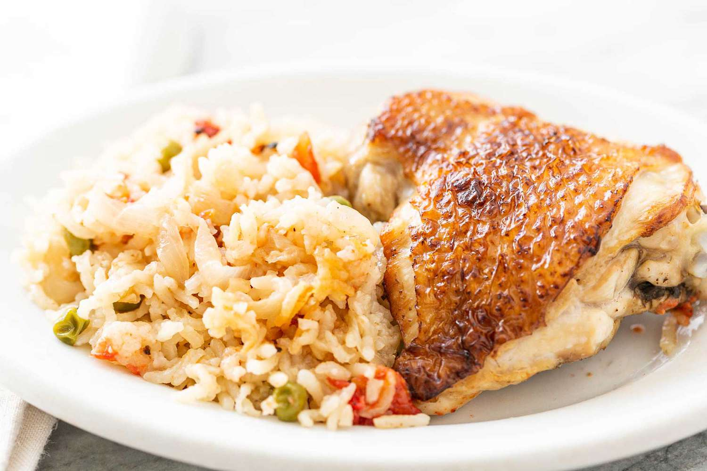

Chicken and Rice Recipe

Chicken and Rice Recipe
Ingredients
- 2 cups long-grain rice
- 1 lb chicken thighs (boneless, skinless)
- 4 cups chicken broth
- 1 onion (chopped)
- 2 cloves garlic (minced)
- 1 teaspoon paprika
- 1 teaspoon cumin
- Salt and pepper to taste
- Fresh parsley (for garnish)
Preparation Steps
- Prepare Chicken: Season chicken thighs with paprika, cumin, salt, and pepper.
- Cook Chicken: In a large skillet, heat oil over medium heat. Add chicken and cook until browned on both sides. Remove and set aside.
- Sauté Vegetables: In the same skillet, add chopped onion and garlic. Sauté until the onion is translucent.
- Cook Rice: Add rice to the skillet and stir for 1-2 minutes until lightly toasted. Pour in chicken broth.
- Add Chicken: Return the chicken to the skillet, nestling it into the rice. Bring to a boil, then reduce heat to low, cover, and simmer for 20-25 minutes until rice is tender and chicken is cooked through.
- Serve: Fluff the rice with a fork, garnish with fresh parsley, and serve warm.
Enjoy Your Chicken and Rice
This simple and flavorful chicken and rice recipe is perfect for busy weeknights.